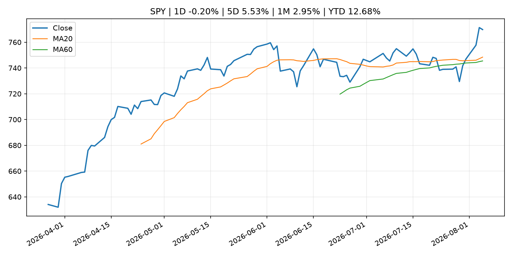
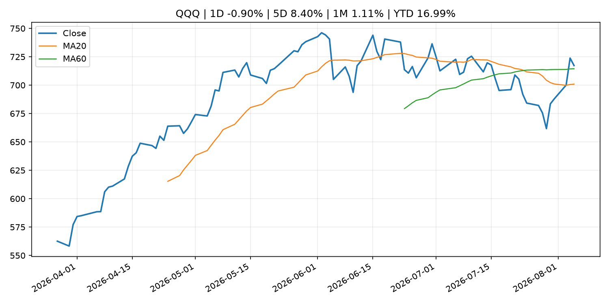
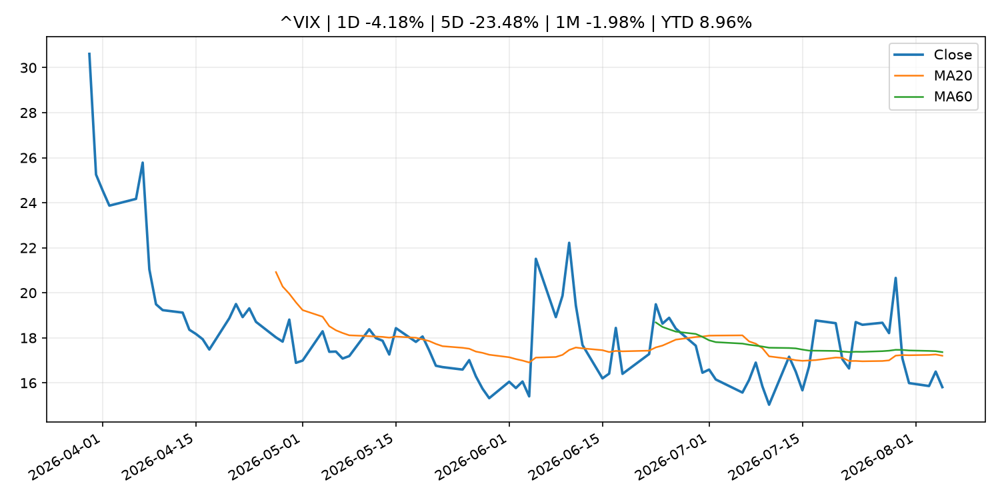
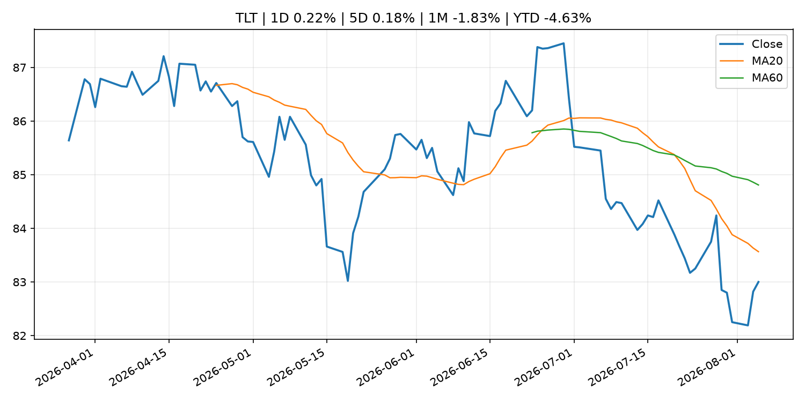
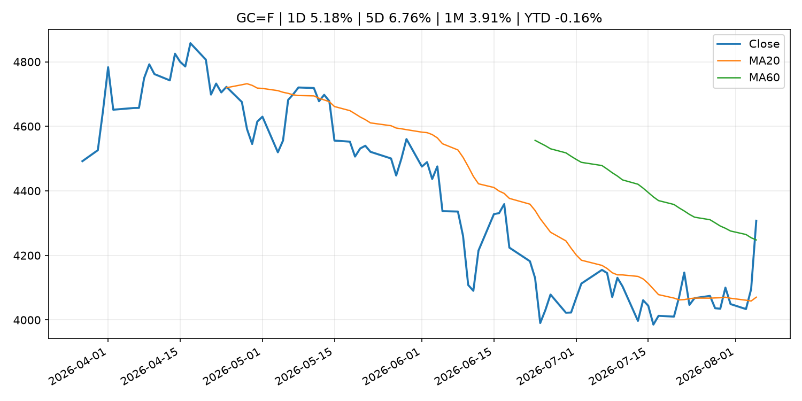
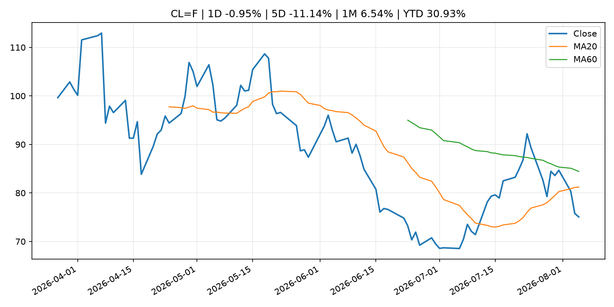
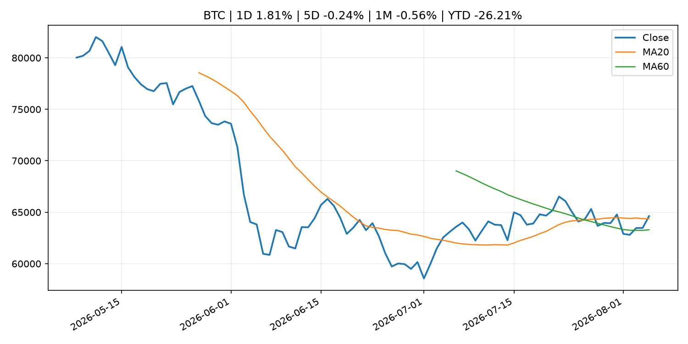
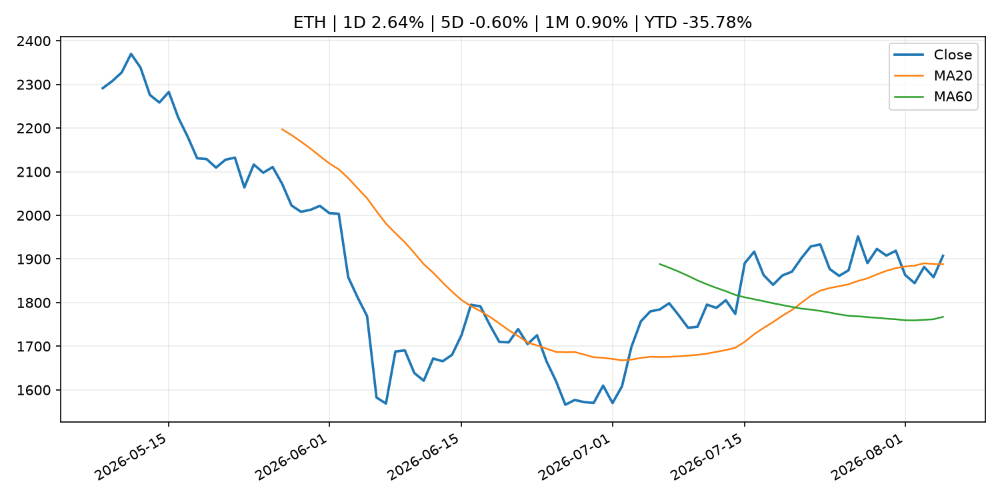
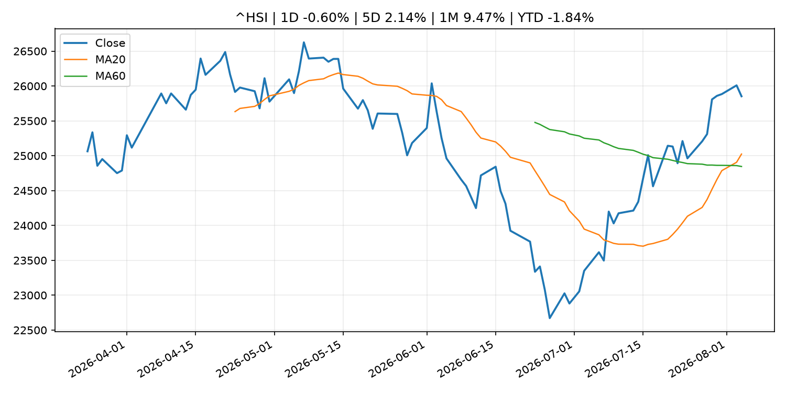

Global Macro Morning Briefing - 2026-08-06
Not financial advice / 非投资建议。
0. 今日总览
- 市场状态：unknown。市场信号不足，暂不判断明确状态。
- 今日三大主线：
- central_bank_decision: Fed Governor Cook says she's 'prepared to act' on rate hike to address inflation
- regulation: SEC Establishes Financial Reporting and Accounting Unit in Enforcement Division
- crypto_market_structure: Yellow Card raises $40 million to link banks to stablecoin processing
- 一句话结论：今日晨报重点关注：央行决策会重定价利率、汇率、久期资产和风险资产。；监管变化会改变行业盈利预期和资产风险溢价。。跨资产方面，SPY 1D -0.20%；QQQ 1D -0.90%；^VIX 1D -4.18%；TLT 1D 0.22%；GC=F 1D 5.18%；CL=F 1D -0.95%；BTC 1D 1.81%；ETH 1D 2.64%；市场信号不足，暂不判断明确状态。政策、通胀、利率、美元、美债、能源和加密监管仍是主要观察线索。所有结论仅基于公开数据与短摘要整理，不构成投资建议。
1. 隔夜跨资产市场
- 美股：SPY 1D -0.20%，QQQ 1D -0.90%，整体趋势需结合 VIX 和利率确认。
- 美债/美元：TLT 1D 0.22%，美元指数 1D -0.20%，是判断折现率压力的核心线索。
- 黄金/原油：黄金 1D 5.18%，原油 1D -0.95%，用于观察避险、通胀和地缘风险。
- 加密：BTC 1D 1.81%，ETH 1D 2.64%，关注是否独立于纳指走出加密自身行情。
- 港股/A股：恒生 1D -0.60%，沪深300/上证 1D n/a，重点看中国政策预期与人民币线索。
- 风险观察：关注后续数据是否确认当前跨资产信号。
US_EQUITY
| symbol | latest close | 1D | 5D | 1M | YTD | trend |
|---|---|---|---|---|---|---|
| SPY | 769.79 | -0.20% | 5.53% | 2.95% | 12.68% | uptrend |
| QQQ | 717.30 | -0.90% | 8.40% | 1.11% | 16.99% | range_bound |
| DIA | 542.81 | 0.44% | 5.32% | 2.72% | 12.24% | uptrend |
| IWM | 299.77 | -0.64% | 3.88% | 1.21% | 20.50% | uptrend |
| VTI | 379.65 | -0.31% | 5.34% | 2.72% | 12.89% | uptrend |
US_MACRO_MARKET
| symbol | latest close | 1D | 5D | 1M | YTD | trend |
|---|---|---|---|---|---|---|
| ^VIX | 15.81 | -4.18% | -23.48% | -1.98% | 8.96% | downtrend |
| DX-Y.NYB | 99.69 | -0.20% | -1.10% | -1.43% | 1.29% | range_bound |
| TLT | 83.00 | 0.22% | 0.18% | -1.83% | -4.63% | downtrend |
| IEF | 93.31 | 0.06% | 0.15% | -0.42% | -2.88% | downtrend |
COMMODITIES
| symbol | latest close | 1D | 5D | 1M | YTD | trend |
|---|---|---|---|---|---|---|
| GC=F | 4,307.50 | 5.18% | 6.76% | 3.91% | -0.16% | range_bound |
| SI=F | 62.26 | 3.68% | 7.61% | 2.19% | -11.75% | range_bound |
| CL=F | 75.05 | -0.95% | -11.14% | 6.54% | 30.93% | downtrend |
| BZ=F | 79.49 | 0.16% | -12.40% | 7.19% | 30.85% | downtrend |
| NG=F | 2.67 | -0.48% | -2.06% | -18.25% | -26.23% | strong_downtrend |
| HG=F | 6.75 | 2.04% | 7.65% | 9.43% | 19.74% | strong_uptrend |
HK_MARKET
| symbol | latest close | 1D | 5D | 1M | YTD | trend |
|---|---|---|---|---|---|---|
| ^HSI | 25,852.92 | -0.60% | 2.14% | 9.47% | -1.84% | strong_uptrend |
| 0700.HK | 492.20 | 0.94% | 5.53% | 6.72% | -21.00% | uptrend |
| 9988.HK | 128.10 | 1.83% | 12.76% | 33.72% | -14.03% | strong_uptrend |
| 3690.HK | 93.05 | 0.38% | 0.81% | 18.76% | -11.04% | strong_uptrend |
| 1810.HK | 27.64 | -1.14% | -13.30% | 19.65% | -31.38% | uptrend |
| 1211.HK | 93.80 | 0.37% | 0.21% | 12.40% | -5.01% | strong_uptrend |
CRYPTO
| symbol | latest close | 1D | 5D | 1M | YTD | trend |
|---|---|---|---|---|---|---|
| BTC | 64,622.12 | 1.81% | -0.24% | -0.56% | -26.21% | uptrend |
| ETH | 1,907.26 | 2.64% | -0.60% | 0.90% | -35.78% | uptrend |
| SOLANA | 74.00 | 0.70% | -0.70% | -4.89% | -40.57% | range_bound |
| BINANCECOIN | 592.96 | 0.75% | 0.24% | 2.00% | -31.27% | range_bound |
| RIPPLE | 1.06 | -1.11% | -1.90% | -4.36% | -42.27% | strong_downtrend |
2. 今日最重要的 10 条新闻
1. Fed Governor Cook says she's 'prepared to act' on rate hike to address inflation
- 来源：CNBC Economy
- 时间：2026-08-05T20:36:16+00:00
- 地区：US
- 事件类型：central_bank_decision
- 重要性层级：Tier 1
- 一句话摘要：Cook was part of a 9-3 majority that voted last week to keep the central bank's benchmark borrowing rate in a range between 3.5%-3.75%.
- 为什么重要：央行决策会重定价利率、汇率、久期资产和风险资产。
- 可能影响：主要影响 DXY，方向为 positive，强度 high；通胀压力可能推高政策利率预期并支撑美元。
- 资产：DXY 方向：positive 强度：high 原因：通胀压力可能推高政策利率预期并支撑美元。
- 资产：TLT 方向：negative 强度：high 原因：通胀上行通常推升收益率、压低长债价格。
- 资产：QQQ 方向：negative 强度：high 原因：更高利率对成长股估值折现率不利。
- 资产：SPY 方向：mixed 强度：medium 原因：名义增长可能支撑收入，但更高利率压制估值。
- 资产：GC=F 方向：mixed 强度：medium 原因：通胀对黄金是支撑，但实际利率上行会形成压力。
- 资产：BTC 方向：negative 强度：high 原因：流动性收紧通常压制高 beta 加密资产。
- 原文链接：https://www.cnbc.com/2026/08/05/fed-governor-cook-says-shes-prepared-to-act-on-rate-hike-to-address-inflation.html
2. SEC Establishes Financial Reporting and Accounting Unit in Enforcement Division
- 来源：SEC Press Releases
- 时间：2026-08-05T14:30:00-04:00
- 地区：US
- 事件类型：regulation
- 重要性层级：Tier 2
- 一句话摘要：The Securities and Exchange Commission today announced it is establishing a new specialized unit within the Division of Enforcement to provide the dedicated expertise, focus, and capacity to pursue accounting and financial reporting fraud cases as well…
- 为什么重要：监管变化会改变行业盈利预期和资产风险溢价。
- 可能影响：主要影响 BTC，方向为 mixed，强度 high；加密监管或 ETF 进展会改变 BTC 的资金流和风险溢价。
- 资产：BTC 方向：mixed 强度：high 原因：加密监管或 ETF 进展会改变 BTC 的资金流和风险溢价。
- 资产：ETH 方向：mixed 强度：high 原因：监管框架会影响 ETH 产品化和机构参与度。
- 资产：COIN 方向：mixed 强度：medium 原因：监管清晰度和执法风险会影响交易平台估值。
- 资产：crypto market 方向：mixed 强度：high 原因：信息影响整个加密市场结构，但方向取决于细节。
- 原文链接：https://www.sec.gov/newsroom/press-releases/2026-72-sec-establishes-financial-reporting-accounting-unit-enforcement-division
3. Yellow Card raises $40 million to link banks to stablecoin processing
- 来源：CoinDesk
- 时间：2026-08-05T12:09:05+00:00
- 地区：global
- 事件类型：crypto_market_structure
- 重要性层级：Tier 2
- 一句话摘要：Yellow Card raises $40 million to link banks to stablecoin processing
- 为什么重要：加密市场结构和监管变化会影响 BTC、ETH 及相关股票的风险溢价。
- 可能影响：主要影响 BTC，方向为 mixed，强度 high；加密监管或 ETF 进展会改变 BTC 的资金流和风险溢价。
- 资产：BTC 方向：mixed 强度：high 原因：加密监管或 ETF 进展会改变 BTC 的资金流和风险溢价。
- 资产：ETH 方向：mixed 强度：high 原因：监管框架会影响 ETH 产品化和机构参与度。
- 资产：COIN 方向：mixed 强度：medium 原因：监管清晰度和执法风险会影响交易平台估值。
- 资产：crypto market 方向：mixed 强度：high 原因：信息影响整个加密市场结构，但方向取决于细节。
- 原文链接：https://www.coindesk.com/business/2026/08/05/yellow-card-raises-usd40-million-to-link-banks-to-stablecoin-processing
4. Circle shares fall 3% despite earnings beat as stablecoin issuer misses on revenue
- 来源：CoinDesk
- 时间：2026-08-05T11:13:17+00:00
- 地区：global
- 事件类型：crypto_market_structure
- 重要性层级：Tier 2
- 一句话摘要：Circle shares fall 3% despite earnings beat as stablecoin issuer misses on revenue
- 为什么重要：加密市场结构和监管变化会影响 BTC、ETH 及相关股票的风险溢价。
- 可能影响：主要影响 BTC，方向为 mixed，强度 high；加密监管或 ETF 进展会改变 BTC 的资金流和风险溢价。
- 资产：BTC 方向：mixed 强度：high 原因：加密监管或 ETF 进展会改变 BTC 的资金流和风险溢价。
- 资产：ETH 方向：mixed 强度：high 原因：监管框架会影响 ETH 产品化和机构参与度。
- 资产：COIN 方向：mixed 强度：medium 原因：监管清晰度和执法风险会影响交易平台估值。
- 资产：crypto market 方向：mixed 强度：high 原因：信息影响整个加密市场结构，但方向取决于细节。
- 原文链接：https://www.coindesk.com/markets/2026/08/05/circle-shares-jump-as-earnings-beat-offsets-revenue-miss-arc-blockchain-gains-wall-street-backing
5. Coldcard hack sparks a self-custody security overhaul: Cory Klippsten
- 来源：CoinDesk
- 时间：2026-08-05T09:55:32+00:00
- 地区：global
- 事件类型：crypto_market_structure
- 重要性层级：Tier 2
- 一句话摘要：Coldcard hack sparks a self-custody security overhaul: Cory Klippsten
- 为什么重要：加密市场结构和监管变化会影响 BTC、ETH 及相关股票的风险溢价。
- 可能影响：主要影响 BTC，方向为 mixed，强度 high；加密监管或 ETF 进展会改变 BTC 的资金流和风险溢价。
- 资产：BTC 方向：mixed 强度：high 原因：加密监管或 ETF 进展会改变 BTC 的资金流和风险溢价。
- 资产：ETH 方向：mixed 强度：high 原因：监管框架会影响 ETH 产品化和机构参与度。
- 资产：COIN 方向：mixed 强度：medium 原因：监管清晰度和执法风险会影响交易平台估值。
- 资产：crypto market 方向：mixed 强度：high 原因：信息影响整个加密市场结构，但方向取决于细节。
- 原文链接：https://www.coindesk.com/markets/2026/08/05/coldcard-hack-sparks-a-self-custody-security-overhaul-cory-klippsten
6. Samsung is poised to become a dominant stablecoin distributor, analysts say
- 来源：CoinDesk
- 时间：2026-08-04T17:14:13+00:00
- 地区：global
- 事件类型：crypto_market_structure
- 重要性层级：Tier 2
- 一句话摘要：Samsung is poised to become a dominant stablecoin distributor, analysts say
- 为什么重要：加密市场结构和监管变化会影响 BTC、ETH 及相关股票的风险溢价。
- 可能影响：主要影响 BTC，方向为 mixed，强度 high；加密监管或 ETF 进展会改变 BTC 的资金流和风险溢价。
- 资产：BTC 方向：mixed 强度：high 原因：加密监管或 ETF 进展会改变 BTC 的资金流和风险溢价。
- 资产：ETH 方向：mixed 强度：high 原因：监管框架会影响 ETH 产品化和机构参与度。
- 资产：COIN 方向：mixed 强度：medium 原因：监管清晰度和执法风险会影响交易平台估值。
- 资产：crypto market 方向：mixed 强度：high 原因：信息影响整个加密市场结构，但方向取决于细节。
- 原文链接：https://www.coindesk.com/business/2026/08/04/samsung-is-poised-to-become-a-dominant-stablecoin-distributor-analysts-say
7. Block slashed 40% of its workforce for AI — and its earnings suggest that’s paying off
- 来源：MarketWatch Top Stories
- 时间：2026-08-05T22:19:00+00:00
- 地区：US
- 事件类型：earnings
- 重要性层级：Tier 2
- 一句话摘要：“We can ship higher-quality products much, much more quickly,” an executive said in the wake of the company’s better-than-expected earnings report
- 为什么重要：大型科技股盈利和资本开支会影响纳指、半导体和 AI 交易主线。
- 可能影响：可能影响利率、汇率、风险资产或大宗商品预期，但当前公开信息不足以判断明确方向。
- 资产：暂无明确资产映射
- 方向：unknown
- 强度：low
- 原因：公开信息不足以判断方向。
- 原文链接：https://www.marketwatch.com/story/block-slashed-40-of-its-workforce-for-ai-and-earnings-suggest-thats-paying-off-852b7c54?mod=mw_rss_topstories
8. Why AT&T, Verizon and T-Mobile shares are down after SpaceX’s earnings
- 来源：MarketWatch Top Stories
- 时间：2026-08-05T21:28:00+00:00
- 地区：US
- 事件类型：earnings
- 重要性层级：Tier 2
- 一句话摘要：SpaceX thinks it will be able to build wireless capabilities without massive network investments.
- 为什么重要：大型科技股盈利和资本开支会影响纳指、半导体和 AI 交易主线。
- 可能影响：可能影响利率、汇率、风险资产或大宗商品预期，但当前公开信息不足以判断明确方向。
- 资产：暂无明确资产映射
- 方向：unknown
- 强度：low
- 原因：公开信息不足以判断方向。
- 原文链接：https://www.marketwatch.com/story/why-at-t-verizon-and-t-mobile-shares-are-down-after-spacexs-earnings-033a07ce?mod=mw_rss_topstories
9. Retail investors are buying the dip on SpaceX’s stock before more shares flood the market
- 来源：MarketWatch Top Stories
- 时间：2026-08-05T21:17:00+00:00
- 地区：US
- 事件类型：earnings
- 重要性层级：Tier 2
- 一句话摘要：Retail investors were doing what they do best on Wednesday: Buying the dip in SpaceX shares aggressively, even as the company’s stock sank after it released its first earnings report.
- 为什么重要：大型科技股盈利和资本开支会影响纳指、半导体和 AI 交易主线。
- 可能影响：可能影响利率、汇率、风险资产或大宗商品预期，但当前公开信息不足以判断明确方向。
- 资产：暂无明确资产映射
- 方向：unknown
- 强度：low
- 原因：公开信息不足以判断方向。
- 原文链接：https://www.marketwatch.com/story/retail-investors-are-buying-the-dip-on-spacexs-stock-before-more-shares-flood-the-market-9f83e00f?mod=mw_rss_topstories
10. Coldcard exploit could boost demand for regulated bitcoin exposure, analysts say
- 来源：CoinDesk
- 时间：2026-08-05T15:44:08+00:00
- 地区：global
- 事件类型：other
- 重要性层级：Tier 3
- 一句话摘要：Coldcard exploit could boost demand for regulated bitcoin exposure, analysts say
- 为什么重要：这条信息暂未匹配到重大宏观、政策或市场事件，更适合作为背景跟踪。
- 可能影响：更偏背景信息，短期市场影响可能有限。
- 资产：暂无明确资产映射
- 方向：unknown
- 强度：low
- 原因：公开信息不足以判断方向。
- 原文链接：https://www.coindesk.com/tech/2026/08/05/coldcard-exploit-could-boost-demand-for-regulated-bitcoin-exposure-analysts-say
3. 政策与央行观察
1. Fed Governor Cook says she's 'prepared to act' on rate hike to address inflation
- 来源：CNBC Economy
- 时间：2026-08-05T20:36:16+00:00
- 地区：US
- 事件类型：central_bank_decision
- 重要性层级：Tier 1
- 一句话摘要：Cook was part of a 9-3 majority that voted last week to keep the central bank's benchmark borrowing rate in a range between 3.5%-3.75%.
- 为什么重要：央行决策会重定价利率、汇率、久期资产和风险资产。
- 可能影响：主要影响 DXY，方向为 positive，强度 high；通胀压力可能推高政策利率预期并支撑美元。
- 资产：DXY 方向：positive 强度：high 原因：通胀压力可能推高政策利率预期并支撑美元。
- 资产：TLT 方向：negative 强度：high 原因：通胀上行通常推升收益率、压低长债价格。
- 资产：QQQ 方向：negative 强度：high 原因：更高利率对成长股估值折现率不利。
- 资产：SPY 方向：mixed 强度：medium 原因：名义增长可能支撑收入，但更高利率压制估值。
- 资产：GC=F 方向：mixed 强度：medium 原因：通胀对黄金是支撑，但实际利率上行会形成压力。
- 资产：BTC 方向：negative 强度：high 原因：流动性收紧通常压制高 beta 加密资产。
- 原文链接：https://www.cnbc.com/2026/08/05/fed-governor-cook-says-shes-prepared-to-act-on-rate-hike-to-address-inflation.html
2. SEC Establishes Financial Reporting and Accounting Unit in Enforcement Division
- 来源：SEC Press Releases
- 时间：2026-08-05T14:30:00-04:00
- 地区：US
- 事件类型：regulation
- 重要性层级：Tier 2
- 一句话摘要：The Securities and Exchange Commission today announced it is establishing a new specialized unit within the Division of Enforcement to provide the dedicated expertise, focus, and capacity to pursue accounting and financial reporting fraud cases as well…
- 为什么重要：监管变化会改变行业盈利预期和资产风险溢价。
- 可能影响：主要影响 BTC，方向为 mixed，强度 high；加密监管或 ETF 进展会改变 BTC 的资金流和风险溢价。
- 资产：BTC 方向：mixed 强度：high 原因：加密监管或 ETF 进展会改变 BTC 的资金流和风险溢价。
- 资产：ETH 方向：mixed 强度：high 原因：监管框架会影响 ETH 产品化和机构参与度。
- 资产：COIN 方向：mixed 强度：medium 原因：监管清晰度和执法风险会影响交易平台估值。
- 资产：crypto market 方向：mixed 强度：high 原因：信息影响整个加密市场结构，但方向取决于细节。
- 原文链接：https://www.sec.gov/newsroom/press-releases/2026-72-sec-establishes-financial-reporting-accounting-unit-enforcement-division
3. Yellow Card raises $40 million to link banks to stablecoin processing
- 来源：CoinDesk
- 时间：2026-08-05T12:09:05+00:00
- 地区：global
- 事件类型：crypto_market_structure
- 重要性层级：Tier 2
- 一句话摘要：Yellow Card raises $40 million to link banks to stablecoin processing
- 为什么重要：加密市场结构和监管变化会影响 BTC、ETH 及相关股票的风险溢价。
- 可能影响：主要影响 BTC，方向为 mixed，强度 high；加密监管或 ETF 进展会改变 BTC 的资金流和风险溢价。
- 资产：BTC 方向：mixed 强度：high 原因：加密监管或 ETF 进展会改变 BTC 的资金流和风险溢价。
- 资产：ETH 方向：mixed 强度：high 原因：监管框架会影响 ETH 产品化和机构参与度。
- 资产：COIN 方向：mixed 强度：medium 原因：监管清晰度和执法风险会影响交易平台估值。
- 资产：crypto market 方向：mixed 强度：high 原因：信息影响整个加密市场结构，但方向取决于细节。
- 原文链接：https://www.coindesk.com/business/2026/08/05/yellow-card-raises-usd40-million-to-link-banks-to-stablecoin-processing
4. Circle shares fall 3% despite earnings beat as stablecoin issuer misses on revenue
- 来源：CoinDesk
- 时间：2026-08-05T11:13:17+00:00
- 地区：global
- 事件类型：crypto_market_structure
- 重要性层级：Tier 2
- 一句话摘要：Circle shares fall 3% despite earnings beat as stablecoin issuer misses on revenue
- 为什么重要：加密市场结构和监管变化会影响 BTC、ETH 及相关股票的风险溢价。
- 可能影响：主要影响 BTC，方向为 mixed，强度 high；加密监管或 ETF 进展会改变 BTC 的资金流和风险溢价。
- 资产：BTC 方向：mixed 强度：high 原因：加密监管或 ETF 进展会改变 BTC 的资金流和风险溢价。
- 资产：ETH 方向：mixed 强度：high 原因：监管框架会影响 ETH 产品化和机构参与度。
- 资产：COIN 方向：mixed 强度：medium 原因：监管清晰度和执法风险会影响交易平台估值。
- 资产：crypto market 方向：mixed 强度：high 原因：信息影响整个加密市场结构，但方向取决于细节。
- 原文链接：https://www.coindesk.com/markets/2026/08/05/circle-shares-jump-as-earnings-beat-offsets-revenue-miss-arc-blockchain-gains-wall-street-backing
5. Coldcard hack sparks a self-custody security overhaul: Cory Klippsten
- 来源：CoinDesk
- 时间：2026-08-05T09:55:32+00:00
- 地区：global
- 事件类型：crypto_market_structure
- 重要性层级：Tier 2
- 一句话摘要：Coldcard hack sparks a self-custody security overhaul: Cory Klippsten
- 为什么重要：加密市场结构和监管变化会影响 BTC、ETH 及相关股票的风险溢价。
- 可能影响：主要影响 BTC，方向为 mixed，强度 high；加密监管或 ETF 进展会改变 BTC 的资金流和风险溢价。
- 资产：BTC 方向：mixed 强度：high 原因：加密监管或 ETF 进展会改变 BTC 的资金流和风险溢价。
- 资产：ETH 方向：mixed 强度：high 原因：监管框架会影响 ETH 产品化和机构参与度。
- 资产：COIN 方向：mixed 强度：medium 原因：监管清晰度和执法风险会影响交易平台估值。
- 资产：crypto market 方向：mixed 强度：high 原因：信息影响整个加密市场结构，但方向取决于细节。
- 原文链接：https://www.coindesk.com/markets/2026/08/05/coldcard-hack-sparks-a-self-custody-security-overhaul-cory-klippsten
6. Samsung is poised to become a dominant stablecoin distributor, analysts say
- 来源：CoinDesk
- 时间：2026-08-04T17:14:13+00:00
- 地区：global
- 事件类型：crypto_market_structure
- 重要性层级：Tier 2
- 一句话摘要：Samsung is poised to become a dominant stablecoin distributor, analysts say
- 为什么重要：加密市场结构和监管变化会影响 BTC、ETH 及相关股票的风险溢价。
- 可能影响：主要影响 BTC，方向为 mixed，强度 high；加密监管或 ETF 进展会改变 BTC 的资金流和风险溢价。
- 资产：BTC 方向：mixed 强度：high 原因：加密监管或 ETF 进展会改变 BTC 的资金流和风险溢价。
- 资产：ETH 方向：mixed 强度：high 原因：监管框架会影响 ETH 产品化和机构参与度。
- 资产：COIN 方向：mixed 强度：medium 原因：监管清晰度和执法风险会影响交易平台估值。
- 资产：crypto market 方向：mixed 强度：high 原因：信息影响整个加密市场结构，但方向取决于细节。
- 原文链接：https://www.coindesk.com/business/2026/08/04/samsung-is-poised-to-become-a-dominant-stablecoin-distributor-analysts-say
4. 市场异动与图表
- QQQ 下跌 -0.90%
- VIX 下跌 -4.18%
- Gold 上涨 5.18%
- ETH 上涨 2.64%
SPY

QQQ

^VIX

TLT

GC=F

CL=F

BTC

ETH

^HSI

5. 华尔街与机构公开观点
- 暂无可靠公开观点。
6. 今日重点关注
- 经济数据：经济数据：暂无可靠公开日历数据；如配置经济日历源后可自动填充。
- 央行讲话：央行讲话：暂无可靠公开日历数据；重点跟踪 Fed、ECB、BoJ、PBOC 官网 RSS。
- 财报：财报：暂无可靠数据。
- 政策事件：政策事件：暂无可靠数据。
- 风险提醒：风险提醒：关注数据源失败项、突发地缘风险、利率和美元的二阶反应。
7. 英文金融表达与宏观概念
- inflation expectations：通胀预期，指家庭、企业或市场对未来通胀的预估。 例句：Inflation expectations can shape wage bargaining and bond yields.
- real yield：实际收益率，名义利率扣除通胀预期后的收益率。 例句：Gold often reacts more to real yields than nominal yields.
- terminal rate：终端利率，市场预期本轮加息周期的最高政策利率。 例句：A higher terminal rate can pressure growth stocks.
- market structure：市场结构，指交易、托管、清算、ETF、监管等制度安排。 例句：Crypto market structure rules can affect institutional participation.
- soft landing：软着陆，指通胀回落而经济避免明显衰退。 例句：Markets often rally when data support a soft landing.
- risk-off：避险模式，资金偏向美元、国债、黄金等防御资产。 例句：A geopolitical shock can push markets into risk-off mode.
8. 背景材料
- Coldcard exploit could boost demand for regulated bitcoin exposure, analysts say（CoinDesk，other）：Coldcard exploit could boost demand for regulated bitcoin exposure, analysts say
- Crypto Long & Short: Putting the bitcoin sizing question to the test（CoinDesk，other）：Crypto Long & Short: Putting the bitcoin sizing question to the test
- Strategy’s STRC rebounds 30% as company builds cash reserve, bitcoin price stabilizes（CoinDesk，other）：Strategy’s STRC rebounds 30% as company builds cash reserve, bitcoin price stabilizes
- Galaxy Digital shares slip 5% after second-quarter results（CoinDesk，other）：Galaxy Digital shares slip 5% after second-quarter results
- The $120 million Coldcard hack lights up Bitcoin's memory pool（CoinDesk，other）：The $120 million Coldcard hack lights up Bitcoin's memory pool
- Bitcoin, broader market fail to keep pace as global equities hit record highs（CoinDesk，other）：Bitcoin, broader market fail to keep pace as global equities hit record highs
- Why bitcoin’s ‘500-day rule’ faces its biggest test yet（CoinDesk，other）：Why bitcoin’s ‘500-day rule’ faces its biggest test yet
- Live updates: An AI credit bubble could set up bitcoin’s path to $1 million, says Arthur Hayes（CoinDesk，other）：Live updates: An AI credit bubble could set up bitcoin’s path to $1 million, says Arthur Hayes
- The worst chart for bitcoin bulls right now（CoinDesk，other）：The worst chart for bitcoin bulls right now
- Bitcoin flat at $64,000 as stocks print records and Hormuz deal nears（CoinDesk，other）：Bitcoin flat at $64,000 as stocks print records and Hormuz deal nears
- Sources of Changes in Current Account Balances (Projections for Aug.)（Bank of Japan Announcements，other）：Sources of Changes in Current Account Balances (Projections for Aug.)
- Minutes of the Monetary Policy Meeting on June 15 and 16, 2026（Bank of Japan Announcements，other）：Minutes of the Monetary Policy Meeting on June 15 and 16, 2026
- Federal Reserve Board announces approval of the application by Coastal Bend Bancshares, Inc.（Federal Reserve Press Releases，other）：Federal Reserve Board announces approval of the application by Coastal Bend Bancshares, Inc.
- Federal Reserve Board announces approval of the application by FS Bancorp, Inc.（Federal Reserve Press Releases，other）：Federal Reserve Board announces approval of the application by FS Bancorp, Inc.
- Federal Reserve Board announces approval of the application by Banco Santander, S.A. and Santander Holdings USA, Inc.（Federal Reserve Press Releases，other）：Federal Reserve Board announces approval of the application by Banco Santander, S.A. and Santander Holdings USA, Inc.
- SpaceX tops Wall Street revenue forecast, posts $540 million loss on bitcoin holdings（CoinDesk，other）：SpaceX tops Wall Street revenue forecast, posts $540 million loss on bitcoin holdings
- Japanese Government Bonds Held by the Bank of Japan（Bank of Japan Announcements，other）：Japanese Government Bonds Held by the Bank of Japan
- Collateral Accepted by the Bank of Japan (End of July)（Bank of Japan Announcements，other）：Collateral Accepted by the Bank of Japan (End of July)
- (BOJ Review) Impact of the Bank of Japan's Reductions in JGB Purchases on the JGB Markets（Bank of Japan Announcements，other）：(BOJ Review) Impact of the Bank of Japan's Reductions in JGB Purchases on the JGB Markets
- (Research Paper) IMES DPS: Distance and Loan Pricing Revisited: A Structural Estimation Approach（Bank of Japan Announcements，research_publication）：(Research Paper) IMES DPS: Distance and Loan Pricing Revisited: A Structural Estimation Approach
9. 数据源、失败项与免责声明
- 采集时间：2026-08-05T22:57:13
- 数据源：公开 RSS、Yahoo Finance、CoinGecko、AKShare、FRED、SEC data.sec.gov，以及用户自有 inputs/reports 文件。
- 合规说明：不绕过 WSJ、Bloomberg、FT、Reuters 等付费墙；对付费媒体只使用公开 RSS 标题、摘要、链接和发布时间。
- 免责声明：Not financial advice / 非投资建议。本项目仅供个人学习、研究和信息整理，不构成投资建议、交易建议或任何收益承诺。
- 失败或跳过的数据源：
- crypto data failed coin=dogecoin
- China market data failed symbol=上证指数: empty dataframe
- China market data failed symbol=深证成指: empty dataframe
- China market data failed symbol=创业板指: empty dataframe
- China market data failed symbol=沪深300: empty dataframe
- China market data failed symbol=中证500: empty dataframe
- China market data failed symbol=科创50: empty dataframe
- FRED_API_KEY not set; skipping FRED macro series
- SEC failed cik=0000320193
- SEC failed cik=0000789019
- SEC failed cik=0001045810
- SEC failed cik=0001318605
- SEC failed cik=0001577552